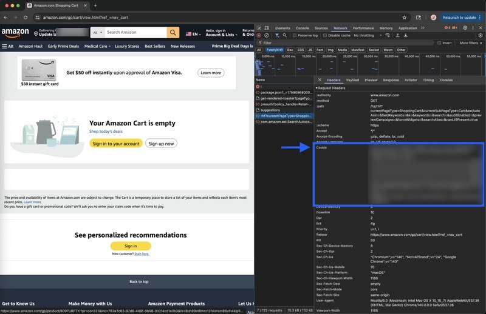
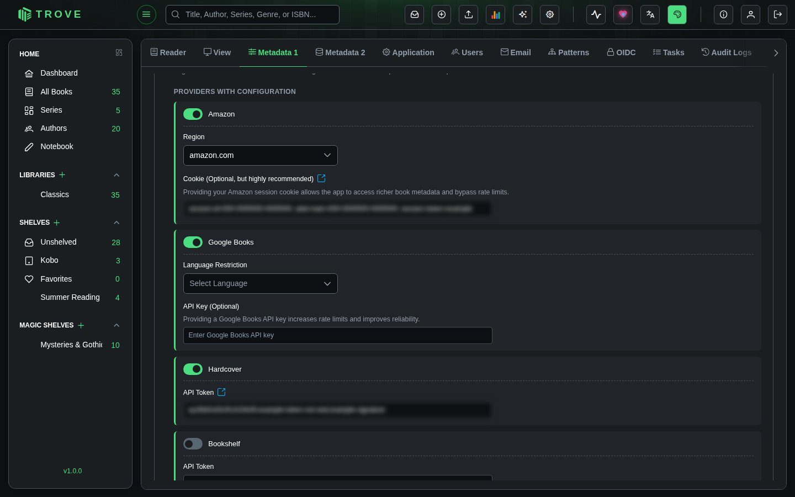

Amazon cookie
If you encounter 503 errors when fetching metadata from Amazon, you can configure browser cookies to bypass Amazon's automated traffic detection.
Step 1: Prepare Your Browser Session
-
Open your web browser and navigate to your regional Amazon website:
- US: https://www.amazon.com
- UK: https://www.amazon.co.uk
- Other regions: Use your local Amazon domain
-
Sign in to Amazon using a secondary account if available
Step 2: Access Developer Tools
-
Open Developer Tools using one of these methods:
- Press
F12on your keyboard - Right-click anywhere on the page and select "Inspect" or "Inspect Element"
- Use the keyboard shortcut
Ctrl+Shift+I(Windows/Linux) orCmd+Option+I(Mac)
- Press
-
Navigate to the Network tab in the developer tools panel
Step 3: Capture Network Requests and Extract Cookie Information

- Refresh the page by pressing
F5or clicking the refresh button - Wait for all requests to load - you'll see a list of network requests appear
- Locate the main request - Look for the first request in the list, typically showing the Amazon homepage URL
- Click on this request to view its detailed information
- Find the Headers section in the request details panel
- Scroll to Request Headers and locate the
cookiefield - Copy the entire cookie value - This will be a long string of text
Step 4: Configure Trove

- Open Settings › Metadata 1
- Under Metadata Providers, find Amazon and choose your region
- Paste the cookie into Cookie (Optional, but highly recommended)
- Click Save Configurations
Troubleshooting
If you're still experiencing issues after setting up cookies:
- Ensure you copied the complete cookie string
- Try using a different browser
- Verify your Amazon account is properly logged in
- Consider clearing your browser cache and repeating the process